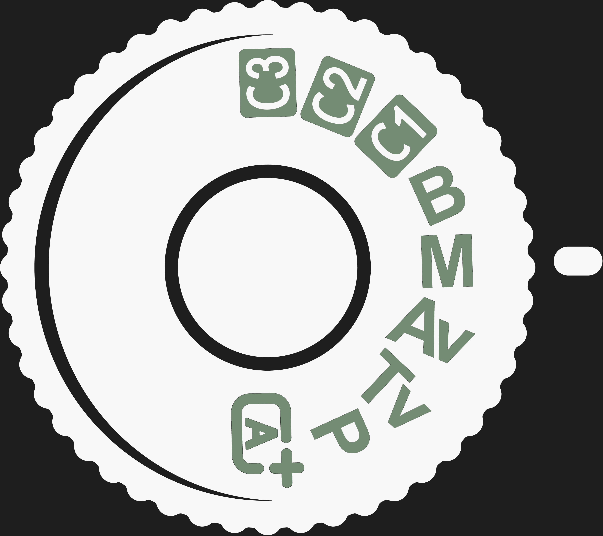

Understanding Digital Camera Modes
With your first entry-level DSLR or mirrorless camera in hand, you may be wondering what all the letters and symbols on the mode dial mean. These are settings for various ways you can control how your camera makes an exposure. They range from Program Mode (P mode) to Manual Mode (M mode). In Program Mode the camera chooses the exposure settings. In Manual Mode, you are in control of the settings. A digital camera will also have semi-auto modes and scene modes.
There are three settings to control the exposure. These are the aperture, shutter speed, and ISO. You can manage each and any of these and also let the camera have some exposure control. Setting the exposure using manual mode, you can decide for yourself how your photographs will look.
Why so Many Camera Modes?
The number of camera modes can seem overwhelming to beginner photographers. Camera companies like to give you plenty of options. Modern digital cameras often have auto exposure modes, often known as scene modes, that can include:
- Portrait Mode
- Night Portrait Mode
- Landscape Mode
- Macro Mode
- Sports Mode
Knowing when to use each of the many scene or auto-modes well will like take time to learn well. And your camera will still be in control of your exposures. Committing to learning Manual Mode takes time too. But once you have, you’ll be able to set your exposures precisely how you want them to look. With practice, you can also be very fast at adjusting the settings.

Choosing the Best Digital Camera Modes
Photography is more enjoyable when you feel confident managing your camera. But always choosing the easiest camera mode will not often result in capturing the best photographs. Starting out using fully auto modes is fine, so long as you don’t get stuck there. If you do, your photos will look generic because the exposures will be ‘safe’ and uncreative.
- Program Mode (P Mode)
- Shutter Priority Mode (S or Tv Mode)
- Aperture Priority Mode (A or Av Mode)
- Manual Mode (M Mode)
- Learning to Use the Exposure Meter
- Auto ISO
- When Auto Camera Modes Produce Poor Exposures
In Program mode, the camera will determine what it thinks is the best shutter speed and aperture for optimal exposure. You can choose to set your ISO manually or automatically on this camera mode. Photographing action is often easier with Program Mode. In this camera mode, you can concentrate more on capturing the action at its peak. You don’t have to be concerned with your aperture, but still need to be careful of your shutter speed setting the camera is choosing.
If you’re photographing anything that’s moving, using a shutter speed that’s too slow will result in a blurred subject. Some cameras have a Program Mode option you can set to instruct the camera to pick a faster shutter speed rather than a wider aperture setting.
This is one of two semi-auto modes that most DSLR cameras, mirrorless cameras, and many others commonly have. In Shutter Priority mode, you have to set the shutter speed you want to use. The camera then calculates the aperture setting it decides will provide a well-exposed image. You have the option of using auto or manual ISO.
Using shutter priority is helpful when your shutter speed is critical to your image. This is usually when photographing anything that’s moving. To freeze a moving subject you need to set your shutter speed so it’s fast enough that your subject does not blur. How fast this is depends on how fast your subject is moving.
For fast-moving subjects like birds in flight, waterfalls, skateboarders, etc., you need to choose a fast shutter speed. 1/1000th of a second or faster will help avoid motion blur. If you want to include blur as a creative aspect of your photo, you’ll need to choose a slower shutter speed.
In Aperture Priority mode, you have to set the aperture you want to use. The camera then calculates the shutter speed setting it decides will provide a well-exposed image. You have the option of using auto or manual ISO. The aperture is a diaphragm in the lens that works in a similar manner to the iris in our eye. It can open and close to control the amount of light entering the lens. The settings are measured in f-stops. A higher f-stop number means the opening in the lens is smaller, so less light will enter. Adjusting the setting to a lower number means the opening is larger and more light will enter.
When using a narrow aperture, say f/16 or f/22, the camera will balance the exposure by choosing a slow shutter speed. This means a longer time for light to enter the camera and affect the sensor. Using a wide aperture, less time is needed for a good exposure. A faster shutter speed will be set by the camera.
With your camera set to manual mode, you have to do all the work yourself. You are in full control of the exposure. This may seem daunting if you are comfortable with any of the auto or semi-auto modes. But it’s not so difficult. The main benefit of choosing to use manual exposure mode is that you are in complete control of your exposures.
Every camera has an exposure meter, also called a light meter. This provides a guide for you to set the shutter speed, aperture, and ISO. If you are not in manual mode, the meter may not show in the viewfinder or on the monitor. Learning to read the exposure meter and make adjustments to the settings takes some practice. With experience, you’ll become more creative because you always have to be conscious of the light and each of the settings.
When the meter reads zero, the camera has decided you have a ‘correct’ exposure. The problem is that the camera does not know what you are photographing or what the light is like. It also has absolutely no idea about your creative intent. Your camera is programmed to make predictions. Often these can be pretty good. Always they are generic and based on the assumption that everything in your composition is middle gray. When your subject is not all middle gray, (this is true for most of the photos you take), you’re best to be thinking about how you want to set your exposure.
Say you are taking a photo of a snowman in a snowy yard. Everything is white. If you let the camera set the exposure, or if you manually set it so the meter reads zero, the scene will look gray. This is because the camera thinks it is. To get the snow looking white in your photos you’ll need to choose settings that allow more light to enter and affect the sensor.
Set to auto ISO, even when you’re in manual mode, your camera determines the exposure. You can choose the shutter speed and aperture settings you want, but the camera will then set the ISO to what it is programmed to. Using auto ISO does make life easier if you want to concentrate more on creating photos with a shallow depth of field or use a slow shutter speed. But, despite being in Manual Mode, your camera is still functioning like it’s in one of the priority modes.
If you do use auto ISO I recommend setting an upper limit can be used. In your camera’s menu system you’ll find a setting that allows you to limit the highest ISO the camera will choose automatically. Doing this means you can avoid the highest settings which will tend to introduce a lot of digital noise into your photos.
With your mode dial set to any auto mode, your camera is in control of the exposure. In manual mode, you have control over the aperture and shutter speed, but if you are set to auto ISO, your camera still controls the exposure. With any of these settings the exposures are calculated by pre-programmed algorithms.
Your camera does not know what you are photographing, although some cameras do take a pretty good guess. They have a database of image scenarios built in that assist in determining exposures and focus. However, they are not intuitive and do not know what your intention is for the photo you want to take.
Know what type of photo you want. Manage the exposure settings well. You’ll be more satisfied with your results when you can confidently manage in Manual Mode. Aperture priority and shutter priority give you some control, but not overexposure. Manual mode requires more thought and concentration. Ultimately it gives you a more precise degree of control over every aspect of your photos.